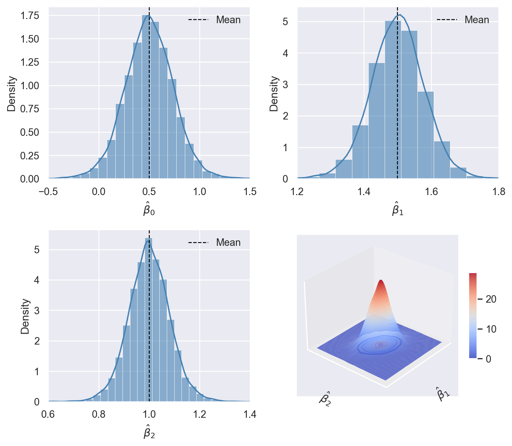

import numpy as np
import pandas as pd
import matplotlib.pyplot as plt
import seaborn as sns
import statsmodels.api as sm
import statsmodels.formula.api as smf
from statsmodels.iolib.summary2 import summary_col
import scipy.stats as stats
from mpl_toolkits.mplot3d import Axes3D15 Linear Regression with Multiple Regressors
15.1 Omitted variable bias
In a regression model of \(Y\) on \(X\), omitted variable bias occurs if the regressor \(X\) is correlated with an omitted variable that determines \(Y\). Let \(Z\) be a variable omitted from the regression model. Then, \(Z\) causes omitted variable bias if \(Z\) satisfies the following two conditions:
- \(Z\) is a determinant of \(Y\) (i.e., \(Z\) is part of \(u\)), and
- \(Z\) is correlated with the regressor \(X\) (i.e., corr\((Z,X)\ne0\)).
Under omitted variable bias, the zero conditional mean assumption \(\E(u|X)=0\) fails because \(u\) contains a variable that is correlated with \(X\). To see the effect of omitted variable bias on the OLS estimator of \(\beta_1\), recall the following result from Chapter 13: \[ \begin{align} \hat{\beta}_1-\beta_1=\frac{\sum_{i=1}^n(X_i-\bar{X})u_i}{\sum_{i=1}^n(X_i-\bar{X})^2}. \end{align} \]
Under the second and the third least squares assumptions given in Chapter 13, the law of large numbers ensure that \(\frac{1}{n}\sum_{i=1}^n(X_i-\bar{X})^2\xrightarrow{p}\sigma^2_X\) and \(\frac{1}{n}\sum_{i=1}^n(X_i-\bar{X})u_i\xrightarrow{p}\E\left[(X_i-\mu_X)u_i\right]=\text{cov}(X_i,u_i)=\sigma_{Xu}\). Thus, we have \[ \begin{align} \hat{\beta}_1-\beta_1=\frac{\sum_{i=1}^n(X_i-\bar{X})u_i}{\sum_{i=1}^n(X_i-\bar{X})^2}\xrightarrow{p}\frac{\sigma_{Xu}}{\sigma^2_X}=\frac{\sigma_u}{\sigma_X}\times\frac{\sigma_{Xu}}{\sigma_X\sigma_u}=\frac{\sigma_u}{\sigma_X}\times\rho_{Xu}, \end{align} \] where \(\rho_{Xu}=\frac{\sigma_{Xu}}{\sigma_X\sigma_u}\) is the correlation coefficient between \(X\) and \(u\). This results indicates that the OLS estimator \(\hat{\beta}_1\) is inconsistent: \[ \begin{align} \hat{\beta}_1\xrightarrow{p}\beta_1+\frac{\sigma_u}{\sigma_X}\times\rho_{Xu}. \end{align} \tag{15.1}\]
15.2 The multiple regression model
We can avoid omitted variable bias by extending the simple linear regression model to the multiple linear regression model that includes the omitted variable as an additional regressor. The multiple linear regression model with \(k\) regressor is given by \[ \begin{align} Y_i = \beta_0+\beta_1X_{1i}+\beta_2X_{2i}+\dots+\beta_kX_{ki}+u_i,\quad i=1,2,\dots,n, \end{align} \] where
- \(Y_i\) is the \(i\)th observation on the dependent variable \(Y\),
- \((X_{1i},\dots,X_{ki})\) are the \(i\)th observations of the \(k\) regressors \((X_{1},\dots,X_{k})\),
- \(\beta_0\) is the intercept parameter,
- \(\beta_1,\dots,\beta_k\) are slope coefficients associated with \((X_{1},\dots,X_{k})\), and
- \(u_i\) is the \(i\)th error term.
The population regression function is \[ \E(Y|X_{1},\dots,X_{k})=\beta_0+\beta_1X_{1}+\beta_2X_{2}+\dots+\beta_kX_{k}. \]
The population regression function suggests that \(\beta_j\) gives the effect of a unit change in \(X_j\) on the expected change in \(Y\), holding other regressors constant. Using calculus, we have \[ \frac{\partial \E(Y|X_{1},\dots,X_{k})}{\partial X_j}=\beta_j, \]
for \(j=1,\dots,k\). Therefore, \(\beta_j\) is also called the partial effect of \(X_j\) on \(Y\), holding all other regressors constant. In other words, after controlling for the effects of the other regressors, \(\beta_j\) gives the effect of a unit change in \(X_j\) on the expected value of \(Y\).
As in the case of the linear regression model with only one regressor, we will only assume a zero-conditional mean assumption for the error term \(u_i\). Also, the error term \(u_i\) is homoskedastic if its conditional variance \(\var(u_i|X_{1i},\dots,X_{ki})\) is constant for \(i=1,\dots,n\). Otherwise, the error term is said to be heteroskedastic. As in the case of a linear regression model with one regressor, homoskedasticity and heteroskedasticity only affect the standard errors of the OLS estimator and do not affect the bias, consistency, or asymptotic normality of the OLS estimator.
15.3 The OLS estimators in multiple regression
The OLS estimators are obtained by minimizing the sum of the squared residuals (or prediction errors). Formally, the OLS estimators \(\hat{\beta}_0,\dots,\hat{\beta}_k\) are the values of \(b_0,\dots,b_k\) that minimize the following objective function: \[ \begin{align*} \sum_{i=1}^n\left(Y_i-\left(b_0+b_1X_{1i}+b_2X_{2i}+\dots+b_kX_{ki}\right)\right)^2. \end{align*} \]
The OLS estimator can be obtained using the matrix calculus. In Chapter 29, we use matrix algebra to derive an explicit formula for the OLS estimator.
The predicted values and residuals are defined similarly to the case of a linear regression model with only one regressor:
- The predicted value of \(Y_i\) is \(\hat{Y}_i=\hat{\beta}_0+\hat{\beta}_1X_{1i}+\dots+\hat{\beta}_kX_{ki}\) for \(i=1,\dots,n\).
- The \(i\)th residual is \(\hat{u}_i=Y_i-\hat{Y}_i\) for \(i=1,\dots,n\).
In the following theorem, we state an alternative way for computing the OLS estimators.
Theorem 15.1 (The Frisch–Waugh Theorem) The OLS estimators \(\hat{\beta}_0, \dots, \hat{\beta}_k\) can alternatively be computed through the following steps, involving a sequence of shorter regressions:
- Run a regression of \(X_j\) on \(X_1, \dots, X_{j-1}, X_{j+1}, \dots, X_k\), including an intercept term. Let \(\tilde{X}_j\) be the residuals from this regression.
- Run a regression of \(Y\) on \(X_1, \dots, X_{j-1}, X_{j+1}, \dots, X_k\), including an intercept term. Let \(\tilde{Y}\) be the residuals from this regression.
- Finally, obtain the OLS estimator \(\hat{\beta}_j\) by running a regression of \(\tilde{Y}\) on \(\tilde{X}_j\), including an intercept term.
The Frisch–Waugh theorem shows that by removing the variation associated with \(X_1, \dots, X_{j-1}, X_{j+1}, \dots, X_k\) from both \(X_j\) and \(Y\) through the regressions in Steps 1 and 2, the final regression in Step 3 captures the effect of \(X_j\) on \(Y\) after accounting for the influence of the other regressors.
15.4 Application to test scores and the student–teacher ratio
We use the district-level test score data described in Chapter 13 to estimate the following models: \[
\begin{align}
&\text{TestScore}_i = \beta_0 + \beta_1 \text{STR}_i + u_i,\\
&\text{TestScore}_i=\beta_0+\beta_1\times\text{STR}_i+\beta_2\times\text{PctEL}_i+u_i,
\end{align}
\] for \(i=1,\dots,420\), where \(\text{PctEL}_i\) is the percentage of English learners in the \(i\)th district. We use the following code chunks to import data from the caschool.xlsx file.
# Import data
mydata = pd.read_excel("data/caschool.xlsx")# Column names
mydata.columnsIndex(['Observation Number', 'dist_cod', 'county', 'district', 'gr_span',
'enrl_tot', 'teachers', 'calw_pct', 'meal_pct', 'computer', 'testscr',
'comp_stu', 'expn_stu', 'str', 'avginc', 'el_pct', 'read_scr',
'math_scr'],
dtype='object')The describe method can be used to get descriptive statistics provided in Table 15.1 on str, el_pct, and testscr.
# Summary statistics
mydata[["str", "el_pct", "testscr"]].round(3).describe().T| count | mean | std | min | 25% | 50% | 75% | max | |
|---|---|---|---|---|---|---|---|---|
| str | 420.0 | 19.640417 | 1.891805 | 14.00 | 18.5825 | 19.723 | 20.87200 | 25.80 |
| el_pct | 420.0 | 15.768152 | 18.285912 | 0.00 | 1.9410 | 8.778 | 22.96975 | 85.54 |
| testscr | 420.0 | 654.156548 | 19.053348 | 605.55 | 640.0500 | 654.450 | 666.66250 | 706.75 |
In Table 15.2, we provide sample correlation coefficients between variables. We see that PctEL is negatively correlated with testscr and positively correlated with str.
# Correlation coefficients
mydata[["str","el_pct", "testscr"]].corr()| str | el_pct | testscr | |
|---|---|---|---|
| str | 1.000000 | 0.187642 | -0.226363 |
| el_pct | 0.187642 | 1.000000 | -0.644124 |
| testscr | -0.226363 | -0.644124 | 1.000000 |
In the following code chunk, we use the smf.ols() function to estimate both models.
# Estimation
model1 = smf.ols(formula='testscr~str', data=mydata)
result1 = model1.fit()
model2 = smf.ols(formula='testscr~str+el_pct', data=mydata)
result2 = model2.fit()Using the summary_col() function from the statsmodels.iolib.summary2, we can present the estimation results contained in result1 and result2 as shown in Table 15.3.
# Print results in table form
models = ['Model 1', 'Model 2']
results_table = summary_col(results=[result1, result2],
float_format='%0.3f',
stars=True,
model_names=models)
results_table| Model 1 | Model 2 | |
| Intercept | 698.933*** | 686.032*** |
| (9.467) | (7.411) | |
| str | -2.280*** | -1.101*** |
| (0.480) | (0.380) | |
| el_pct | -0.650*** | |
| (0.039) | ||
| R-squared | 0.051 | 0.426 |
| R-squared Adj. | 0.049 | 0.424 |
Standard errors in parentheses.
* p<.1, ** p<.05, ***p<.01
Using the estimation results in Table 15.3, we can write the estimated regression equations as \[ \begin{align*} &\text{Model 1}: \widehat{TestScore}=698.9-2.280\times STR,\\ &\text{Model 2}: \widehat{TestScore}=686-1.10\times STR-0.65\times PctEL. \end{align*} \]
The estimate \(\hat{\beta}_1=-1.10\) in Model 2 indicates that when STR increases by one student, the test score on average declines by 1.10 points, holding PctEL constant. The estimate \(\hat{\beta}_2=-0.65\) in Model 2 shows that one percent increase in PctEL reduces the test score on average by 0.65 points, holding STR constant. Note that the estimate \(\hat{\beta}_1=-2.280\) in Model 1 is approximately twice as small as the estimate \(\hat{\beta}_1=-1.10\) in Model 2, indicating that Model 1 suffers from omitted variable bias.
15.5 Measures of fit
In this section, we provide four measures of fit for the multiple linear regression model: (i) the standard error of the regression, (ii) the root mean square errors, (ii) the regression \(R^2\), and (iv) the adjusted \(R^2\).
The standard error of the regression (SER) is the estimator of the standard deviation of the error term. It is calculated based on the standard deviation of the residuals: \[ \text{SER} = s_{\hat{u}}=\sqrt{\frac{1}{n-k-1}\sum_{i=1}^n\hat{u}^2_i} = \sqrt{\frac{1}{n-k-1}SSR}, \]
where \(SSR\) is the sum of squared residuals \(SSR=\sum_{i=1}^n\hat{u}^2_i\) and \(k\) is the number of regressors in the model. The root mean square errors (RMSE) is defined by \[ RMSE = \sqrt{\frac{1}{n}SSR}. \] Both SER and RMSE are measures of the spread of the distribution of \(Y\) around the regression line. Equivalently, since \(\hat{u}_i=Y_i-\hat{Y}_i\), we can interpret SER and RMSE as measures of the spread of the distribution of the prediction errors. The smaller the SER and RMSE, the better the fit of the regression model.
The \(R^2\) shows the fraction of the sample variance of \(Y\) explained by the regressors. It is given by \[ \begin{align*} R^2 = \frac{ESS}{TSS} = 1-\frac{SSR}{TSS}, \end{align*} \]
where
- \(ESS=\sum_{i=1}^n\left(\hat{Y}_i-\bar{\hat{Y}}\right)^2\) is the explained sum of squares,
- \(SSR=\sum_{i=1}^n\hat{u}^2_i\) is the sum of squared residuals, and
- \(TSS=\sum_{i=1}^n\left(Y_i-\bar{Y}\right)^2\) is the total sum of squares.
In general, the SSR decreases when a new regressor is added to the model, which leads to an increase in \(R^2\). However, this increase does not necessarily indicate that the added variable improves the fit of the model. The adjusted \(R^2\) (also denoted by \(\bar{R}^2\)) addresses this issue by penalizing the inclusion of additional regressors. It is defined as \[ \begin{align*} \bar{R}^2=1-\frac{n-1}{n-k-1}\times\frac{SSR}{TSS}=1-\frac{s^2_{\hat{u}}}{s^2_Y}. \end{align*} \]
Note that \(\bar{R}^2< R^2\), but if \(n\) is large, the two will be very close because \((n-1)/(n-k-1)\) approaches one as \(n\) increases. Also, adding a new regressor to the model affects \(\bar{R}^2\) in two opposing directions. On the one hand, the new regressor decreases the \(SSR\), which tends to increase \(\bar{R}^2\). On the other hand, the factor \((n-1)(n-k-1)\) increases, which tends to reduce \(\bar{R}^2\). Therefore, the net effect on \(\bar{R}^2\) depends on which of these two effects is relatively larger.
The results in Table 15.3 show that including PctEL in the regression increases the \(R^2\) from 0.051 to 0.426. Thus, including PctEL substantially improves the fit of the regression. Because \(n\) is large and we have only two regressors, the difference between \(R^2\) and \(\bar{R}^2\) is very small: \(R^2 = 0.426\) vs. \(\bar{R}^2 = 0.424\). Note that Table 15.3 does not include the SER measures. In the following code chunk, we compute the SER measures for both models.
# Computing SER for both models
SER1 = np.sqrt(np.sum(result1.resid**2) / result1.df_resid)
SER2 = np.sqrt(np.sum(result2.resid**2) / result2.df_resid)
# Print the SER values
print("The SER for Model 1 is:", np.round(SER1, 1))
print("The SER for Model 2 is:", np.round(SER2, 1))The SER for Model 1 is: 18.6
The SER for Model 2 is: 14.5The SER value \(18.6\) falls to \(14.5\) when PctEL is included as a second regressor into the model. Finally, in the following code chunk, we compute these measures of fit manually for the second model. The results are given in Table 15.4.
# Computing SER, RMSE, R^2, and adjusted R^2 for the second model
n = result2.nobs
k = result2.k_constant
y_mean = np.mean(mydata["testscr"]) # mean of avg. test-scores
SSR = np.sum(result2.resid**2)
TSS = np.sum((mydata["testscr"] - y_mean) ** 2)
ESS = np.sum((result2.fittedvalues - y_mean) ** 2)
# Compute measures
SER = np.sqrt(SSR/(n - k - 1))
RMSE = np.sqrt(SSR/n)
Rsq = 1 - (SSR / TSS)
adj_Rsq = 1 - ((n - 1) / (n - k - 1)) * SSR / TSS
# Print measures
fit_measures = pd.DataFrame([SER, RMSE, Rsq, adj_Rsq],
index=["SER", "RMSE", "R^2", "Adj.R^2"],
columns=[""])# Print the measures of fit
fit_measures| SER | 14.447173 |
| RMSE | 14.412734 |
| R^2 | 0.426431 |
| Adj.R^2 | 0.425059 |
15.6 The least squares assumptions for causal inference in multiple regression
In this section, we provide the least squares assumptions for the multiple linear regression model. As in the case of the linear regression model with one regressor, these assumptions ensure that the OLS estimator has the desired properties. First, these assumptions ensure that the OLS estimator is unbiased, consistent, and has an asymptotic normal distribution. Second, under these assumptions, the OLS estimates of the slope coefficients provide the estimated causal effects of the regressors on the dependent variable. We list these assumptions below.
The first assumption extends the zero-conditional mean assumption from the linear regression model with one regressor to the model with multiple regressors. We can use the correlation approach described in Chapter 13 to check whether this assumption is violated. According to this approach, in an empirical application, if we suspect that the error term includes an omitted variable that is correlated with the included regressors, then \(\E\left(u_i | X_{1i}, X_{2i}, \dots, X_{ki}\right) \neq 0\). In Section 13.8, we relax this assumption through a conditional mean independence assumption for the variable of interest.
The second assumption requires that our sample data be collected through simple random sampling. The third assumption stipulates that there are no large outliers, which is ensured by requiring that both the dependent variable and the regressors have finite fourth moments.
The fourth assumption is new and rules out perfect multicollinearity. In a multiple linear regression model, perfect multicollinearity arises if there is a perfect linear relationship among the regressors. For example, the linear relationship such as \(X_1=0.5X_5+X_6\) suggests perfect multicollinearity among the regressors \(X_1\), \(X_5\), and \(X_6\). In Chapter 29, we show that the OLS estimator is not defined when perfect multicollinearity is present.
Theorem 15.2 summarizes the properties of the OLS estimators under these four assumptions. In this theorem, we do not provide explicit formulas for the asymptotic variance of the OLS estimators. In Chapter 29, we use linear algebra to derive these formulas.
Theorem 15.2 (Properties of OLS Estimators) Under the four least squares assumptions, we have \(\E(\hat{\beta}_j) = \beta_j\) for \(j=1,\dots,k\), i.e, the OLS estimators are unbiased. As \(n\to\infty\), \(\hat{\beta}_0,\dots,\hat{\beta}_k\) are consistent and have a joint multivariate normal distribution.
According to Theorem 15.2, the OLS estimators \(\hat{\beta}_0, \dots, \hat{\beta}_k\) satisfy three properties: (i) unbiasedness, (ii) consistency, and (iii) asymptotic joint normality. In the following simulation study, we use simulated data to show that these properties hold when \(n\) is large enough. We assume that the dependent variable is generated according too \[ Y_i = \beta_0+\beta_1X_{1i}+\beta_2X_{2i}+u_i, \] where \(\beta_0=0.5\), \(\beta_1=1.5\), \(\beta_2=1\) and \(u_i\sim t_3\). For the regressors, we assume that they are generated from the following bivariate normal distribution: \[ (X_{1i},X_{2i})^{'}\sim N\left(\begin{pmatrix}2\\1.5\end{pmatrix}, \begin{pmatrix} 5&1.5\\ 1.5&5 \end{pmatrix} \right). \]
We set the sample size \(n\) to 100 and generate 10000 samples. Using each sample, we estimate the model and store the estimated coefficients in the coefs array. We then generate histograms and density plots for each estimated coefficient. We provide the simulation results in Figure 15.1. The histograms and density plots for \(\hat{\beta}_0\), \(\hat{\beta}_1\), and \(\hat{\beta}_2\) are bell-shaped and centered around the respective true parameter values. The surface plot in Figure 15.1 resembles that of a bivariate normal distribution, suggesting that \(\hat{\beta}_1\) and \(\hat{\beta}_2\) have a joint bivariate normal distribution.
# Set sample size and number of simulations
n = 100
n_simulations = 10000
# Initialize array for coefficients
coefs = np.zeros((n_simulations, 3))
# Set seed for reproducibility
np.random.seed(15)
# Loop for sampling and estimation
for i in range(n_simulations):
# Generate multivariate normal samples
mean = [2, 1.5]
cov = [[5, 1.5], [1.5, 5]]
X = stats.multivariate_normal.rvs(mean=mean, cov=cov, size=n)
# Generate random errors
u = np.random.standard_t(df=3,size=n)
# Generate dependent variable
Y = 0.5 + 1.5 * X[:, 0] + 1 * X[:, 1] + u
# Fit linear regression using statsmodels
X_with_const = sm.add_constant(X) # Add constant term for intercept
model = sm.OLS(Y, X_with_const).fit()
coefs[i, :] = model.params # Store the coefficients# Simulation results
# Set seaborn style
sns.set(style='darkgrid')
# Create the figure
fig = plt.figure(figsize=(8, 7))
# Histogram and density plot for beta_0
ax1 = fig.add_subplot(221)
sns.histplot(coefs[:, 0], bins=50, kde=True, color='steelblue', stat='density', ax=ax1, alpha=0.6)
ax1.axvline(np.mean(coefs[:, 0]), color='black', linestyle='dashed', linewidth=1, label='Mean')
ax1.set_xlabel(r'$\hat{\beta}_0$', fontsize=12)
ax1.set_ylabel('Density', fontsize=12)
ax1.legend(frameon=False)
ax1.set_xlim(-0.5,1.5)
# Histogram and density plot for beta_1
ax2 = fig.add_subplot(222)
sns.histplot(coefs[:, 1], bins=50, kde=True, color='steelblue', stat='density', ax=ax2, alpha=0.6)
ax2.axvline(np.mean(coefs[:, 1]), color='black', linestyle='dashed', linewidth=1, label='Mean')
ax2.set_xlabel(r'$\hat{\beta}_1$', fontsize=12)
ax2.set_ylabel('Density', fontsize=12)
ax2.legend(frameon=False)
ax2.set_xlim(1.2,1.8)
# Histogram and density plot for beta_2
ax3 = fig.add_subplot(223)
sns.histplot(coefs[:, 2], bins=50, kde=True, color='steelblue', stat='density', ax=ax3, alpha=0.6)
ax3.axvline(np.mean(coefs[:, 2]), color='black', linestyle='dashed', linewidth=1, label='Mean')
ax3.set_xlabel(r'$\hat{\beta}_2$', fontsize=12)
ax3.set_ylabel('Density', fontsize=12)
ax3.set_xlim(0.6,1.4)
ax3.legend(frameon=False)
# Kernel density estimation for beta_1 and beta_2
kde = stats.gaussian_kde(coefs[:, 1:].T)
# Create grid for 3D plot
x_grid = np.linspace(1.2, 1.8, 100)
y_grid = np.linspace(0.6, 1.4, 100)
X_grid, Y_grid = np.meshgrid(x_grid, y_grid)
Z_grid = kde(np.vstack([X_grid.ravel(), Y_grid.ravel()])).reshape(X_grid.shape)
# 3D density estimate plot for beta_1 and beta_2
ax4 = fig.add_subplot(224, projection='3d')
surf = ax4.plot_surface(X_grid, Y_grid, Z_grid, cmap='coolwarm', edgecolor='none', rstride=1, cstride=1, alpha=0.85)
ax4.contour(X_grid, Y_grid, Z_grid, zdir='z', offset=np.min(Z_grid), cmap='coolwarm', linestyles="solid")
ax4.set_xlabel(r'$\hat{\beta}_1$', fontsize=12)
ax4.set_ylabel(r'$\hat{\beta}_2$', fontsize=12)
#ax4.set_zlabel('Estimated Density', fontsize=12)
# Add color bar for surface
fig.colorbar(surf, ax=ax4, shrink=0.5, aspect=10)
# Remove ticks from 3D plot
ax4.set_xticks([])
ax4.set_yticks([])
ax4.set_zticks([])
# Set a different viewing angle for better perspective
ax4.view_init(elev=30, azim=220)
# Adjust layout for better spacing
plt.tight_layout()
plt.show()
15.7 Multicollinearity
When there is an exact linear relationship between regressors, we say there is perfect multicollinearity. On the other hand, when two or more regressors are highly correlated but not perfectly, we say that there is imperfect multicollinearity. Although imperfect multicollinearity does not violate the least squares assumptions, it can result in large standard errors for one or more of the OLS estimators.
The perfect multicollinearity among the dummy variables is called the dummy variable trap. To illustrate the dummy variable trap, we use the data set contained in the ch8_cps.xlsx file. This data set includes the following variables.
Female: 1 if female; 0 if maleAge: Age (in Years)Ahe: Average Hourly Earnings in 2015Yrseduc: Years of EducationNortheast: 1 if from the Northeast, 0 otherwiseMidwest: 1 if from the Midwest, 0 otherwiseSouth: 1 if from the South, 0 otherwiseWest: 1 if from the West, 0 otherwise
Note that there are four regional dummy variables, denoted by Northeast, Midwest, South, and West. We consider the following regression model: \[
\begin{align*}
\text{Ahe}&=\beta_0+\beta_1\text{Yrseduc}+\beta_2\text{Female}+\beta_3\text{Northeast}\\
&+\beta_4\text{Midwest}+\beta_5\text{South}+\beta_6\text{West}+u.
\end{align*}
\]
This regression suffers from the dummy variable trap beacuse we have a perfect linear relationship among the regional dummy variables: \[ \text{Northeast}+\text{Midwest}+\text{South}+\text{West}=1. \]
To resolve this, we will treat the last dummy variable as the base category and exclude it from the regression model.
We use the following code chunks to import the data. Table 15.5 provides summary statistics.
# Import data
mydata = pd.read_excel("data/ch8_cps.xlsx")
# Display column names
mydata.columnsIndex(['ahe', 'yrseduc', 'female', 'age', 'northeast', 'midwest', 'south',
'west'],
dtype='object')# Summary statistics
mydata.round(3).describe().T| count | mean | std | min | 25% | 50% | 75% | max | |
|---|---|---|---|---|---|---|---|---|
| ahe | 59668.0 | 25.213725 | 17.288965 | 2.0 | 13.736 | 20.192 | 31.25 | 228.365 |
| yrseduc | 59668.0 | 14.094389 | 2.598457 | 6.0 | 12.000 | 13.000 | 16.00 | 20.000 |
| female | 59668.0 | 0.438510 | 0.496209 | 0.0 | 0.000 | 0.000 | 1.00 | 1.000 |
| age | 59668.0 | 42.884846 | 12.583984 | 15.0 | 33.000 | 42.000 | 52.00 | 85.000 |
| northeast | 59668.0 | 0.157371 | 0.364153 | 0.0 | 0.000 | 0.000 | 0.00 | 1.000 |
| midwest | 59668.0 | 0.195063 | 0.396252 | 0.0 | 0.000 | 0.000 | 0.00 | 1.000 |
| south | 59668.0 | 0.369863 | 0.482772 | 0.0 | 0.000 | 0.000 | 1.00 | 1.000 |
| west | 59668.0 | 0.277703 | 0.447870 | 0.0 | 0.000 | 0.000 | 1.00 | 1.000 |
In the following, we use the smf.ols function from the statsmodels.formula.api module to estimate the regression model.
# Estimation
model3 = smf.ols(formula='ahe ~ yrseduc + female + northeast + midwest + south',
data=mydata)
result3 = model3.fit()The estimation results contained in the result3 object are shown in Table 15.6. The coefficient on each dummy variable shows the average difference in the dependent variable relative to the base category. For example, the estimated coefficient on northeast is 1.105, meaning that, holding the other variables constant, a person living in the Northeast region earns, on average, 1.105 more dollars hourly than a person living in the West (the base category).
The estimated coefficient on female is -6.367. This estimate indicates that holding other variables constant, women earn on average 6.367 fewer dollars hourly than men. The estimated coefficient on Yrseduc is 2.981, which means that for each additional year of education, average hourly earnings increase by 2.981 dollars, holding other variables constant.
# Print results in table form
models = ['Model 3']
results_table = summary_col(results=[result3],
float_format='%0.3f',
stars=True,
model_names=models)
results_table| Model 3 | |
| Intercept | -13.501*** |
| (0.356) | |
| yrseduc | 2.981*** |
| (0.024) | |
| female | -6.367*** |
| (0.126) | |
| northeast | 1.105*** |
| (0.197) | |
| midwest | -1.382*** |
| (0.184) | |
| south | -1.108*** |
| (0.156) | |
| R-squared | 0.226 |
| R-squared Adj. | 0.226 |
Standard errors in parentheses.
* p<.1, ** p<.05, ***p<.01
15.8 Control variables and conditional mean independence
In this section, we divide the regressors into two groups. The first group includes the variables of interest, denoted by \(X_1, \dots, X_k\). We aim to measure the causal effects of these variables on the dependent variable. The second group of regressors includes control variables, denoted by \(W_1, \dots, W_r\). A control variable is a regressor that accounts for an omitted factor affecting the dependent variable. Thus, our multiple linear regression model with control variables can be written as \[ Y_i = \beta_0+\beta_1X_{1i}+\dots+\beta_k X_{ki}+\beta_{k+1}W_{1i}+\dots+\beta_{k+r}W_{ri}+u_i, \tag{15.2}\] for \(i=1,\dots,n\). We consider this regression model under the following assumptions.
Except for the first assumption, all other assumptions are simple adjustments of the least squares assumptions given in Section 13.6 to account for the control variables. The conditional mean independence assumption indicates that, once we control for the control variables, the variables of interest become uncorrelated with the error term. This assumption ensures that the coefficients on the variables of interest have a causal interpretation. However, we do not require that \(\E\left(u_i | W_{1i}, \dots, W_{ri}\right) = 0\); that is, the control variables can be correlated with the error term. Thus, the coefficients on the control variables do not have a causal interpretation.
Theorem 15.3 (The OLS estimators in multiple regression with control variables) Under the least squares assumptions for causal inference in the multiple regression model with control variables, the OLS estimators \(\hat{\beta}_0, \dots, \hat{\beta}_k\) are unbiased, consistent, and have an asymptotic joint normal distribution.
Proof (Proof of Theorem 15.3). Under the conditional mean independence assumption, we assume that \[ \begin{align} \E\left(u_i|X_{1i},X_{i2},\dots,X_{ik},W_{1i},\dots,W_{ri}\right)&=\E\left(u_i|W_{1i},\dots,W_{ri}\right)\\ & = \gamma_0 + \gamma_1W_{1i} +\dots+\gamma_k W_{ki}, \end{align} \] where \(\gamma\)’s are unknown coefficients. That is, we assume that \(\E\left(u_i|W_{1i},\dots,W_{ri}\right)\) is a linear function of the control variables. Then, taking the conditional expectation of Equation 15.2 with respect to \(X_{1i},X_{i2},\dots,X_{ik},W_{1i},\dots,W_{ri}\), we obtain \[ \begin{align} &\E\left(Y_i|X_{1i},X_{i2},\dots,X_{ik},W_{1i},\dots,W_{ri}\right)\\ &=\beta_0+\beta_1X_{1i}+\dots+\beta_kX_{ki}+\beta_{k+1}W_{1i}+\dots+\beta_{k+r}W_{ri}\\ &+\E\left(u_i|X_{1i},X_{i2},\dots,X_{ik},W_{1i},\dots,W_{ri}\right)\\ &=(\beta_0+\gamma_0)+\beta_1X_{1i}+\dots+\beta_kX_{ki}+(\beta_{k+1}+\gamma_1)W_{1i}+\dots+(\beta_{k+r}+\gamma_r)W_{ri}\\ &=\delta_0+\beta_1X_{1i}+\dots+\beta_kX_{ki}+\delta_1W_{1i}+\dots+\delta_rW_{ri}, \end{align} \] where \(\delta_0=(\beta_{0}+\gamma_0)\) an \(\delta_j=(\beta_{k+j}+\gamma_j)\) for \(j=1,\dots,r\). This result suggests that we can express Equation 15.2 as \[ Y_i=\delta_0+\beta_1X_{1i}+\dots+\beta_k X_{ki}+\delta_{k+1}W_{1i}+\dots+\delta_{k+r}W_{ri}+v_i, \tag{15.3}\] where \(\E\left(v_i|X_{1i},X_{i2},\dots,X_{ik},W_{1i},\dots,W_{ri}\right)=0\). Thus, we can apply Theorem 15.2 and conclude that the OLS estimators \(\hat{\beta}_1,\dots,\hat{\beta}_k,\hat{\delta}_0,\dots,\hat{\delta}_r\) are unbiased, consistent, and have an asymptotic normal distribution.
The proof Theorem 15.3 shows that the OLS estimators \(\hat{\delta}_0,\dots,\hat{\delta}_r\) are unbiased and consistent estimators of \(\delta_0,\dots,\delta_r\). From \(\beta_{k+j}=\delta_j-\gamma_j\), we can derive the OLS estimators of the coefficients on the control variables as \(\hat{\beta}_{k+j}=\hat{\delta}_j-\hat{\gamma}_j\). However, this approach is not feasible because we do not have consistent estimators of \(\gamma_j\) for \(j=1,\dots,r\).
Theorem 15.3 justifies the use of control variables in the multiple linear regression model. According to this theorem, control variables should be selected so that, once included in the model, the variable of interest becomes uncorrelated with the error term. In the empirical application presented in the next chapter, we discuss how to choose control variables in practice.